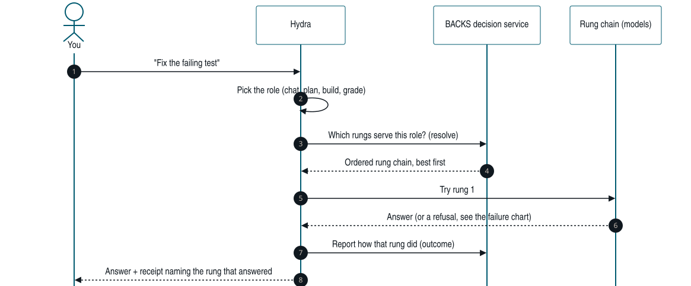

03 / CODING & OPERATIONS · HYDRAAGENT
How HydraAgent works
A plain-English guide for anyone, engineer or not: what Hydra needs, what each placeholder means, how a request travels, and what happens when a model says no.
What Hydra is
Hydra is a helper you run in a terminal, the text window where you type commands. You give it a folder of code and a goal in plain words, such as “explain how login works” or “fix the failing test”. Hydra reads the files, decides what to do, asks your permission before it edits a file or runs a command, and then tells you what it did.
Hydra does not contain an AI model itself. A model is the AI service that writes the answers, either one running on your own computer or one you pay for online. Hydra is the part that reads your files, keeps the model inside the rules, and keeps a record.

What you need
Required
| What | Why |
|---|---|
| Python 3.11 or newer | Hydra is written in Python, a programming language. Your computer needs it installed to run Hydra. |
| pipx | A small installer that puts Hydra in its own private space so it cannot break other programs. |
| One model source | Something has to write the answers. Pick one: a local model (Ollama), a cloud key, or the ChatGPT sign-in through the Codex CLI. hydra setup walks you through it. |
Optional
| What | What it adds |
|---|---|
| Ollama | A free program that runs models on your own computer. Private, offline answers; nothing leaves your machine. |
| A GPU (graphics card) | Makes local models fast. Without one they still work, only slower. |
| A cloud model key | Answers from a paid online model. Keys are stored in your home folder under ~/.hydraAgent/workspace/, never in your project. |
| The BACKS decision service | A separate server you run that picks the best available model for each job and switches to another when one fails. Hydra does not ship this server; you point Hydra at it with HYDRA_BACKS_URL. |
| Telegram | Talk to Hydra from your phone. |
| Bubblewrap | A Linux tool that fences a program in, so Hydra can run checks in a locked box. |
| MCP | A standard way for AI tools to talk to each other. Lets other tools use Hydra, and Hydra use them. |
| Memory embeddings | Lets Hydra find past notes by meaning, not only by exact words. |

Placeholders: what they mean and where to set them
Hydra’s public docs never show anyone’s real computer names, network addresses, user names or keys. Wherever you would type your own value you see a placeholder in angle brackets, like <backs-host>. Replace the whole thing, brackets included, with your own value.
| Placeholder | What it means | Where you set it |
|---|---|---|
<your-model> | The name of a model you installed or pay for. | On the command line, or in hydra setup. |
<provider>, <model>, <family> | Who serves a model, its name, and its maker, chosen per role (planner, doer, worker, auditor). | Your own role file, .hydraAgent/hydra.yaml, copied from the example file. It stays out of git. |
<base-url>, <key-env> | The web address of a model service, and the name of the setting that holds its key (never the key itself). | The same role file. |
<backs-host> | The name or network address of the computer running your BACKS decision service: localhost if it is the same computer, or your server’s address on your own network. | HYDRA_BACKS_URL, or BACKS_ENDPOINT in ~/.hydraAgent/workspace/.env.backs. |
<port> | The “door number” that service listens on. | Part of the same address: http://<backs-host>:<port>. |
<needle-url> | The same decision-service address, when a doc talks about its Needle part. | Same as above. |
<YOUR_USER> | Your login name on your computer. | Nowhere. Hydra uses ~, your home folder, so it never needs it. |
<BACKS_DEPLOY_ROOT> | The folder that holds your own BACKS deployment, used by some bundled skills. | Your own machine. Never commit it. |
<camera-mac-N>, <camera-lan-host-N> | A camera’s hardware address and its address on your home network, in the camera-inventory skill. | Filled from your own cameras. Never commit real values. |
An environment variable is a named setting your terminal passes to programs. For example, export HYDRA_BACKS_URL='http://<backs-host>:<port>' sets the BACKS address for the current terminal.
Rules Hydra keeps: no hard-coded hosts, models or keys in its code; keys live in your home folder, outside any project; and an automated check fails the build if a real private address, device address, personal folder or private machine name is ever committed.
A request, step by step
A role is the kind of job: chatting, planning, building code, or grading work. A rung is one model option on a ladder for that role, best first. The BACKS decision service owns the ladder; Hydra only names the rung it wants. A receipt is the short note Hydra prints showing which rung actually answered.

When a model fails
Models fail for ordinary reasons: a key expired, credit ran out, a model was retired, a server is busy. Hydra does not stop at the first failure. It works down the list, and only when nothing can answer does it tell you, in one line, what it tried.
| Code | What it means |
|---|---|
| 401 / 403 | The key was refused: wrong, expired, or out of credit. |
| 402 | Payment required. |
| 404 / 410 | That model is not available any more. |
| 408 / 429 | Too slow, or too many requests right now. |
| 5xx | The service itself had a problem. |
| Any other 4xx | The request itself was wrong, so sending it to the next rung would fail too. Hydra skips the rest of that chain. |
![Failure and fallback chart. Hydra tries rung 1 of the chain. A 401, 402, 403, 404, 410, 408, 429, 5xx or timeout moves it to the next rung, and so on while rungs remain, then to the role's own capability rung. Any other 4xx skips the rest of the chain. If the chain fails, Hydra tries the role's fallbacks from model_routing.yaml. If they all fail, it tries the local GPU rung only if one is configured with a real model. Any answer ends in an answer plus receipt; if nothing answers, Hydra prints a one-line error naming every rung tried and why.](figures/failure-flow.svg)
- The rung chain. The decision service returns the rungs for this job, best first, and Hydra tries each in turn.
- The role’s capability rung is the last try inside the chain.
- Role fallbacks. If there is still no answer,
hydra askwalks the fallbacks listed for that role inhydra/model_routing.yaml. - Local GPU, only if configured. If your setup has a local GPU rung with a real model assigned, Hydra tries it last. If not, it skips it rather than pretend.
- One-line error. If nothing answered you see a single line, such as
ask error: no rung answered: <rung>: 403; <rung>: 429, and the command exits with code 1 so scripts know it failed.
This chart describes Hydra once the rung-chain change in HydraAgent pull request #54 is merged. Until then, tool turns try only the role’s capability rung, and hydra ask falls back straight to the local GPU.
Read more
The full guide, with the same charts, lives in the repository: How Hydra works (plain English). To install, start with the Quickstart.